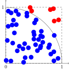

Overview
Teaching: 45 min
Exercises: 10 minQuestions
How do I use multiple cores on a computer to solve a problem?
Objectives
Perform a calculation of pi using only one CPU core.
Perform a calculation of pi using multiple CPU cores on one machine.
Measure the runtime of both the serial and parallel version of the implementation and compare them.
Lola is told that her predecessors all worked on the same project. A high performant calculation that is able to produce a high precision estimate of Pi. Even though calculating Pi can be considered a solved problem, this piece of code is used at the institute to benchmark new hardware. So far, the institute has only aquired larger single machines for each lab to act as work horse per group. But currently, need for distributed computations has arisen and hence a distributed code is needed, that yields both simplicity, efficiency and scalability.
The algorithm to implement is very simple. It was pioneered by Georges-Louis Leclerc de Buffon in 1733.

Overlay a unit square over a quadrant of a circle. Throw m random number pairs and count how many of the pairs lie inside the circle (the number pairs inside the cirlce is denoted by n). Pi is then approximated by:
4*m
Pi = ---
n
The implementation of this algorithm using total_count random number pairs in a nutshell is given in the below program:
import numpy
np.random.seed(2017)
def inside_circle(total_count):
x = np.float32(np.random.uniform(size=total_count))
y = np.float32(np.random.uniform(size=total_count))
radii = np.sqrt(x*x + y*y)
count = len(radii[np.where(radii<=1.0)])
return count
def estimate_pi(total_count):
return (4.0 * inside_circle(total_count) / total_count)
This code is already written in a way to allow later reuse in parallel applications. So don’t mind the two-fold indirection where estimate_pi calls inside_circle. For generating pseudo-random numbers, we sample the uniform probability distribution in the default floating point interval from 0 to 1. The sqrt step is not required directly, but Lola includes it here for clarity. numpy.where is used obtain the list of indices that correspond to radii which are equal or smaller than 1.0. At last, this list of indices is used to filter-out the numbers in the radii array and obtain its length, which is the number Lola are after.
Editing a file on a remote machine
If you are following the materials closely, this is the time where you might want to edit a file on your cluster and paste the contents of the code snippet above into it. The question is, how to do that?
You have several options:
- run a editor inside the
sshsession that you opened to work on the cluster (mostly vi/vim, emacs, nano or pico are programs commonly installed on HPC machines)- connect to the cluster with
sshusing the ssh-Xswitch, if done so, you can open editors like emacs, nedit, gedit, … that are capable of spinning up a GUI (careful though, the GUI contents need to be transmitted through the network from the cluster to your workstation or laptop and vice verse, so in case you have a poor network connection, this approach can be visually painful)- use remote editing capabilities of your preferred editor or IDE (emacs and vim has a built-in packages for this, check your preferred IDE manual for details)
- have a folder of your remote host mounted on your laptop (the details depend on the remote cluster and you should get in touch with the admin to find out what technologies are available), edit the files inside this folder (most of the time they are updated to the clsuter in real-time) and launch the applications from your
sshsession
Lola finishes writing the pi estimation and comes up with a small python script, that she can launch from the command line:
$ python3 ./serial_numpi.py 1000000000
[serial version] required memory 11444.092 MB
[serial version] pi is 3.141557 from 1000000000 samples
She must admit that the application takes quite long to finish. Yet another reason to use a cluster or any other remote resource for these kind of applications that take quite a long time. But not everyone has a cluster at his or her disposal. So she decides to parallelize this algorithm first so that it can exploit the number cores that each machine on the cluster or even her laptop has to offer.
One of the many ways of making a program faster, is trying to compute as many independent parts as possible in parallel. In this case here, we can make the observation that each pair of numbers in x and y is independent of each other.
Keeping this in mind, splitting up the work for multiple cores requires Lola to split up the number of total samples by the number of cores available and calling count_inside on each of these partitions.

The number of partitions has to be limited by the number of CPU cores available. With this in mind, the estimate_pi method can be converted to run in parallel:
from multiprocessing import Pool
def estimate_pi(n_samples,n_cores):
partitions = [ ]
for i in range(n_cores):
partitions.append(int(n_samples/n_cores))
pool = Pool(processes=n_cores)
counts=pool.map(inside_circle, partitions)
total_count = sum(partitions)
return (4.0 * sum(counts) / total_count)
We are using the multiprocessing module that comes with the python standard library. The first step is to create a list of numbers that contain the partitions. For this, n_samples is divided by the number of cores available on the machine, where this code is executed. The ratio has to be converted to an integer to ensure, that each partition is compatible to a length of an array. The construct used next is a process Pool. Due to technical details on how the python interpreter is built, we do not use a Pool of threads here. In other languages than python, threads are the more common idiom to represent independent strings of execution that share the same memory than the process they are created in. The process Pool creates n_cores processes and keeps them active as long as the Pool is active. Then pool.map will call inside_circle using an item of partitions as the argument. In other words, for each item in partitions, the inside_circle function is called once using the respective item as input argument. The result of these invocations of inside_circle are stored within the counts variable (which will have the same length as partitions eventually).

The last step required before calculating pi is to collect the individual results from the partitions and reduce it to one total_count of those random number pairs that were inside of the circle. Here the sum function loops over partitions and does exactly that. So let’s run our parallel implementation and see what it gives:
$ python3 ./parallel_numpi.py 1000000000
[parallel version] required memory 11444.092 MB
[using 20 cores ] pi is 3.141631 from 1000000000 samples
The good news is, the parallel implementation is correct. It estimates Pi to equally bad precision than our serial implementation. The question remains, did we gain anything? For this, Lola tries to the time system utility that can be found on all *nix installations and most certainly on compute clusters.
$ time python3 ./serial_numpi.py 1000000000
[serial version] required memory 11444.092 MB
[serial version] pi is 3.141557 from 1000000000 samples
real 0m52.305s
user 0m40.444s
sys 0m11.655s
$ time python3 ./parallel_numpi.py 1000000000
[parallel version] required memory 11444.092 MB
[using 20 cores ] pi is 3.141631 from 1000000000 samples
real 0m6.113s
user 1m5.676s
sys 0m17.477s
If the snipped from above is compared to the snippets earlier, you can see that time has been put before any other command executed at the prompt and 3 lines have been added to the output of our program. time reports 3 times and they are all different:
realthat denotes the time that has passed during our program as if you would have used a stop watchuserthis is accumulated amount of CPU seconds (so seconds that the CPU was active) spent in code by the user (you)systhis is accumulated amount of CPU seconds that the CPU spent while executing system code that was necessary to run your program (memory management, display drivers if needed, interactions with the disk, etc.)
So from the above, Lola wants to compare the real time spent by her serial implementation (0m52.305s) and compare it to the real time spent by her parallel implementation (0m6.113s). Apparently, her parallel program was 8.6 times faster than the serial implementation. The latter number is called the speed-up of the parallelisation. Very good for a first attempt.
Adding up times
The output of the
timecommand is very much bound to how a operating system works. In an ideal world,userandsysof serial programs should add up toreal. Typically they never do. The reason is, that the operating systems used in HPC and on laptops or workstations are set up in a way, that the operating system decices which process receives time on the CPU (aka to perform computations) when. Once a process runs, it may however happen, that the system decides to intervene and have some other binary have a tiny slice of a CPU second while your application is executed. This is where the mismatch foruser+sysandrealcomes from. Note also how theusertime of the parallel program is a lot larger than the time that was actually consumed. This is because, time reports accumulated timings i.e. it adds up CPU seconds that were consumed in parallel.
Something is missing
A speed-up of 8.6x for a parallel python program is not bad. The luxury of python programming makes us pay the price of performance. In a perfect world, data parallel algorithms using one machine only are expected to scale perfectly, i.e. using 20 cores should give a speed-up of 20x. Due to a myriad of reasons from the software or from the hardware side, this perfect scaling often remains a hard-to-achieve goal which projects attain only after months if not years of development.
Key Points